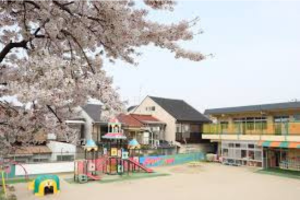
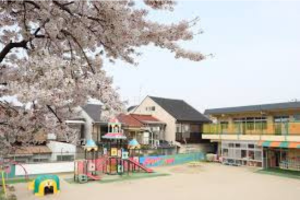

ごあいさつGreeting
ジーズ保育園のホームページにようこそ。私たちの保育理念である「未来に残る思い出を」は、日々の遊びの中で成長する子どもたちが、毎日楽しみながら将来まで残る思い出を作ってほしいという思いが込められております。
そこには、コロナ禍で外出や行事を経験する機会の少なかった子どもたちに、これからはたくさん思い出を作ってほしいとう願いを詰めて令和３年に開園いたしました。
そのため、当園は一般的な保育園に比べて園内の豊富な行事だけでなく、毎月小遠足や少し遠くまでの遠足など、たくさんの行事を行なっております。
また、保護者の方も参加できるイベントも多数ございます。
是非ともお子さんが当園に通っている間、保護者の皆様もご一緒に思い出を作っていただけたら私たちも本望です。
保育目標
①ハツラツとした子どもを育てる
②虹のような多彩の心の子どもを育てる
③輝く未来を作る子どもを育てる
④むじゃきな笑顔の子どもを育てる
開園一周年記念ありがとうございます
皆様のおかげで開園一周年を迎えることが出来ました。
開園当初、私たち民間企業が”ゼロ円保育”を行う事に関してたくさんのご心配の声や、同業者からの慈善事業もどきなどの批判を受けてきました。
しかし、私たちの会社名の由来である「みんなの未来のために」は、まさに子ども達の明るい未来を守りたいという思いで成り立っています。
そのような思いで全てを子どもたちへ還元し、さらにはその業務を全うしてくれている従業員への還元を行い、誠心誠意保育と向き合うことで今に至ります。
これからも皆様のご支援を賜れますよう、努力して参ります。
保育園の様子
北海道の保育園は四季があり、春は草木に触れ、暖かい太陽の光に子ども達の笑顔も眩しいです。夏はみんなでプール遊び。秋には落ち葉を拾ってみんなでかくれんぼ。冬は雪の中で走り回り、頬を赤らめる子ども達。たくさんの思い出が保育園には詰まっています。
 


優しい園長やおっちょこちょいのキリン先生、みんなをまとめるaiko主任など、みんなの保育園生活を楽しませてくれる先生たちがたくさん。
歌をうたったり、絵本を読んだり、一緒におさんぽにも行きます。また、給食の時間が終わったらお昼寝の時間に、みんなが気持ちよく寝られるようにお腹をトントンしてくれるよ。
運営にお困りの施設長様
運営ご支援のご案内
たくさんの保育事業者を救いたいという思いがあり、保育事業者団体｟一般社団法人 F.E.F保育支援協会｠の運営を行なっております。
加盟事業者は全国で３００施設ほどになり、たくさんの研修やオンラインでの情報交換の機会が多数ございます。
入会金や加盟金はなく、全て無料で参加がございますので、会社概要よりお問いあわせください。
※ただし、集合研修等の実地開催での移動費等はご負担いただきます
個別のサポートが必要な場合はご相談ください。
私たちのコンサルティングは相場の半額以下です
運営からコンサルタントまで
しっかりとした助成金要綱の把握やSNSを活用した園児募集は必須です。下記はご相談の多い内容一例です
- 制度が頻繁に変わるので把握が追いつかない
- 児童の登園記録の保管方法を知りたい
- SNSを始めたいけど使い方がわからない
- 助成金の申請方法がわからず返還しなければならなくなった
- etc・・・
上記の内容はほんの一例です。悩みを抱え込まず、困った時は下記の会社概要よりいつでもご相談ください。
お知らせ
- 2023/11/3修正
- ホームページのハンバーガーメニューを追加して課題の提出を行いました。
- 2023/11/1修正
- ホームページの内容を大幅に修正し、じゃんけんゲームを追加、前回の課題である画像とテキストの改行や、画像を自分で作成したものを追加、表示の位置のバランス調整など自分なりのリッチを作成。
- 2023/10/7イベント
- ジーズアカデミーに入学。HTMLもまともに聞いたことがないオジさんが全くの初心者からプログラミングを覚えることが出来るのか。最初の脱落者になるか見ものですね。
- 2023/08/10イベント
- おじさんの誕生日。家族にやっとおめでとうと言われるくらい友達の少なさに自分でも驚きを隠せず。
- 2023/04/01イベント
- 完全独立を行い、日々営業と資料作りを繰り返し、子ども達の明るい未来のために奔走することを宣言。
- 2023/01/11イベント
- 会社を設立。5つの保育園の園長との掛け持ちで1ヶ月で疲労困憊し、レッドブルを最大１日で４本飲む。